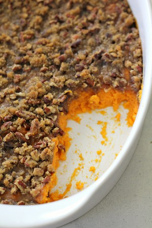

Pumpkin Pie

Description
This is the yummiest sweet potato casserole out there.
Ingredients
- 6 sweet potatoes
- ½ teaspoon salt
- 1 teaspoon vanilla
- 2 eggs beaten
- ¼ cup butter melted
- ½ cup brown sugar
- ⅓ cup flour
- 1 cup pecans chopped
- 3 tablespoons butter melted
Steps
- Scrub skin of sweet potatoes until clean.
- Preheat oven to 400 degrees.
- Pierce the sweet potatoes a few times, then cook in the 400 degree oven for 60-75 minutes.
- Turn off oven, take out the potatoes and let cool completely.
- When ready to cook the complete dish, preheat oven to 350 degrees.
- Remove skins from potatoes. Place potatoes in a bowl.
- Mash potatoes by hand or use a hand mixer to beat until well combined and almost smooth. Add salt, vanilla, eggs and butter to bowl and mix together with mashed potatoes.
- Pour mixture into a greased 9×13-inch baking dish.
- In a small bowl, combine brown sugar, flour, pecans and butter to make topping. Sprinkle topping on top of sweet potato mixture.
- Bake for 30 minutes or until topping is golden brown and sweet potatoes are heated through completely.